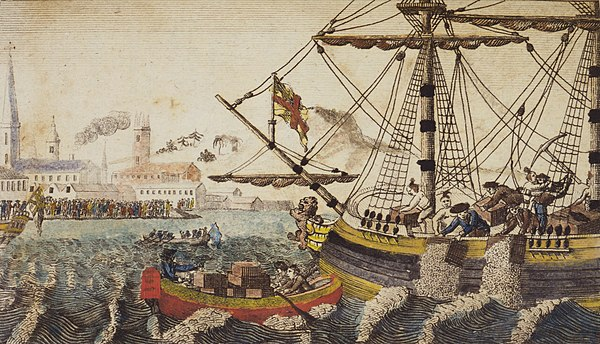

The Boston Tea Party was an American political and mercantile protest on December 16, 1773, by the Sons of Liberty in Boston in colonial Massachusetts.[2] The target was the Tea Act of May 10, 1773, which allowed the East India Company to sell tea from China in American colonies without paying taxes apart from those imposed by the Townshend Acts. The Sons of Liberty strongly opposed the taxes in the Townshend Act as a violation of their rights. In response, the Sons of Liberty, some disguised as Native Americans, destroyed an entire shipment of tea sent by the East India Company.
The demonstrators boarded the ships and threw the chests of tea into the Boston Harbor. The British government considered the protest an act of treason and responded harshly.[3] Days later, the Philadelphia Tea Party, instead of destroying a shipment of tea, sent the ship back to England without unloading. The episodes escalated into the American Revolution, and the Boston Tea Party became an iconic event of American history. Since then other political protests such as the Tea Party movement have referred to themselves as historical successors to the Boston protest of 1773.
The Tea Party was the culmination of a resistance movement throughout British America against the Tea Act, a tax passed by the British Parliament in 1773. Colonists objected to the Tea Act believing it violated their rights as Englishmen to "no taxation without representation", that is, to be taxed only by their own elected representatives and not by a parliament in which they were not represented. The well-connected East India Company also had been granted competitive advantages over colonial tea importers, who resented the move and feared additional infringement on their business.[4] Protesters had prevented the unloading of tea in three other colonies, but in Boston, embattled Royal Governor Thomas Hutchinson refused to allow the tea to be returned to Great Britain.
The Boston Tea Party was a significant event that helped accelerate and intensify colonial support for the American Revolution. Parliament responded in 1774 with the Intolerable Acts, or Coercive Acts, which, among other provisions, ended local self-government in Massachusetts and closed Boston's commerce. Colonists throughout the Thirteen Colonies responded to the Intolerable Acts with additional acts of protest, and by convening the First Continental Congress in Philadelphia, which petitioned the British monarch for repeal of the acts and coordinated colonial resistance to them, culminating in the October 1774 Continental Association. The crisis escalated, leading to the Battles of Lexington and Concord on April 19, 1775, which marked the beginning of the American Revolutionary War.
The event was initially known as The Destruction of the Tea.[5] The moniker "Boston Tea Party" gained popularity in the early 19th century as the event took on a legendary status in American history. The name succinctly captures the combination of locality (Boston), the commodity involved (tea), and the nature of the event (a political 'party' or gathering as a form of protest). The Boston Tea Party arose from two issues confronting the British Empire: the financial problems of the British East India Company and an ongoing dispute about the extent of Parliament's authority, if any, over the British American colonies without seating any elected representation. The North Ministry's attempt to resolve these issues produced a showdown that eventually resulted in the Revolution, the associated War of Independence, and ultimately the end of British colonialization and the emergence of the United States as a sovereign nation.[6] The Boston Tea Party was the second American tax revolt against the British royal authority, the first occurring in April 1772, in Weare, New Hampshire known as the Pine Tree Riot where colonialists protested heavy fines levied against them for harvesting trees.[7]
As Europeans developed a taste for tea in the 17th century, rival companies were formed to import the product from China, which was then governed by the Qing dynasty.[8] In 1698, the British Parliament granted the East India Company a monopoly on the importation of tea.[9] When tea became popular in the British colonies, Parliament sought to eliminate foreign competition by passing an act in 1721 that required colonists to import their tea only from Great Britain.[10] The East India Company did not export tea to the colonies; by law, the company was required to sell its tea wholesale at auctions in England. British firms bought this tea and exported it to the colonies, where they resold it to merchants in Boston, New York, Philadelphia, and Charleston.[11]
Until 1767, the East India Company paid an ad valorem tax of about 25% on tea that it imported into Great Britain.[12] Parliament laid additional taxes on tea sold for consumption in Britain. These high taxes, combined with the fact that tea imported into the Dutch Republic was not taxed by the Dutch government, meant that Britons and British Americans could buy smuggled Dutch tea at much cheaper prices.[13] The biggest market for illicit tea was England—by the 1760s the East India Company was losing £400,000 per year to smugglers in Great Britain[14]—but Dutch tea was also smuggled into British America in significant quantities.[15]
To help the East India Company compete with smuggled Dutch tea, Parliament passed the Indemnity Act in 1767; the Act lowered the tax on tea consumed in Great Britain and gave the East India Company a refund of the 25% duty on tea that was re-exported to the colonies.[16] To help offset this loss of government revenue, Parliament also passed the Townshend Revenue Act of 1767, which levied new taxes, including one on tea, in the colonies.[17]
A controversy between Great Britain and the colonies arose in the 1760s when Parliament sought, for the first time, to impose a direct tax on the colonies for the purpose of raising revenue. Some colonists, known in the colonies as American patriots, objected to the new tax program, arguing that it was a violation of the British Constitution. Britons and British Americans agreed that, according to the constitution, British subjects could not be taxed without the consent of their elected representatives. In Great Britain, this meant that taxes could only be levied by Parliament. Colonists, however, did not elect members of Parliament, and so American Whigs argued that the colonies could not be taxed by that body. According to Whigs, colonists could only be taxed by their own colonial assemblies. Colonial protests resulted in the repeal of the Stamp Act in 1766, but in the 1766 Declaratory Act, Parliament continued to insist that it had the right to legislate for the colonies "in all cases whatsoever".
When new taxes were levied in the Townshend Revenue Act of 1767, American patriots again responded with protests and boycotts. Merchants organized a non-importation agreement, and many colonists pledged to abstain from drinking British tea, with activists in New England promoting alternatives, such as domestic Labrador tea.[18] Smuggling continued apace, especially in New York and Philadelphia, where tea smuggling had always been more extensive than in Boston. Dutied British tea continued to be imported into Boston, however, especially by Richard Clarke and the sons of Massachusetts Governor Thomas Hutchinson, until pressure from Massachusetts Whigs compelled them to abide by the non-importation agreement.
Parliament finally responded to the protests by repealing the Townshend taxes in 1770, except for the tea duty, which Prime Minister Lord North kept to assert "the right of taxing the Americans".[20] This partial repeal of the taxes was enough to bring an end to the non-importation movement by October 1770.[21] From 1771 to 1773, British tea was once again imported into the colonies in significant amounts, with merchants paying the Townshend duty of three pence (equivalent to £1.61 in 2023) per pound in weight of tea.[22][23] Boston was the largest colonial importer of legal tea; smugglers still dominated the market in New York and Philadelphia.
In the 1772 Gaspee affair, colonists attacked and burned a British navy ship enforcing British customs laws off the coast of Newport, Rhode Island.